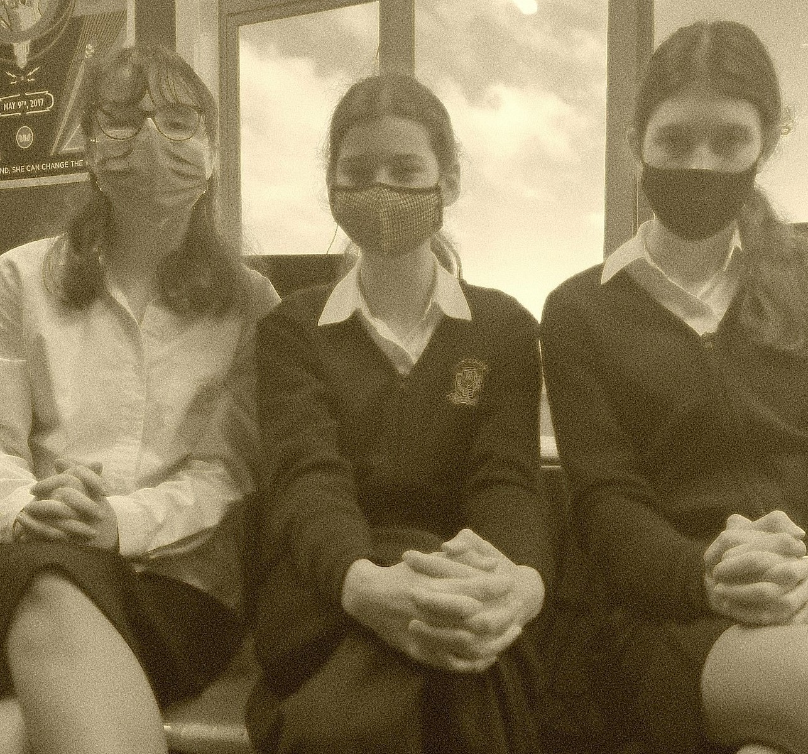
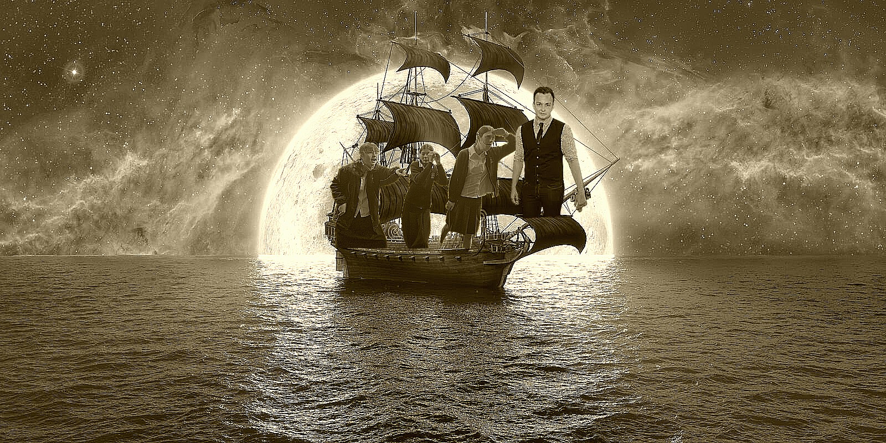
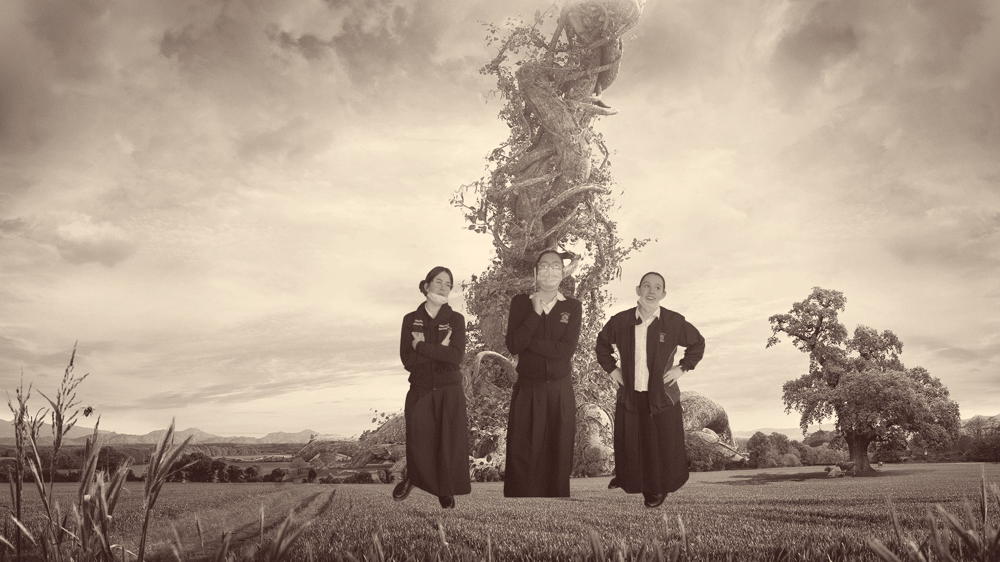
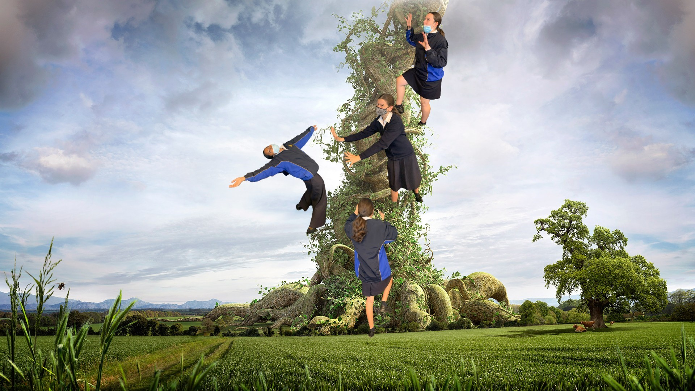
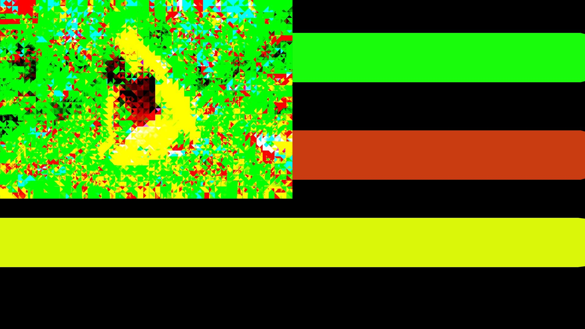
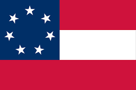
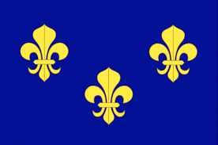

ROMUSAS HISTORY

Pictured Above From Left To Right Is Gibby Gibbster Gibson, Ro SaWhitehead,
Mu SylviaNolan and Sa FiaEspinosa. The Founding Fathers Of Tenarvia.
In May of 1555 Gibby Gibbster Gibson and his accomplices Ro SaWhitehead,
Mu SylviaNolan and Sa FiEspinosa escaped their war driven country of USA.
They sailed across the stormy Pacific fighting the Kraken, the Megalodon and
many other animals that infested in the deep Pacific waters. They sailed for 3
months, trying to find the perfect place to raise their families for Generations
and Generations. Then on the last day, they were losing hope, but the boat was stuck
on a sandy bay. They decided that this will be their new home!

They walked along the island, and sailed to the next. This Island home was
perfect for them, but they had to be careful as they didn't know what animals
inhabit this land. They sailed back to the first Island they walked on. Realising
that this island was right for them. As they walked through the bushy land
Running away from animals and surviving of grass, leaves and honey.
They were stopped in their tracks when they walked right into the beanstalk
right in the center of the land. This is when and where Romusa was born!
Children of Ro, Mu and Sa playing on the beanstalk

The beanstalk shows great signficance to Tenarvians
especially Romusians, as its a sign of where they came from
and where they are going.
Tenarvians honour this beanstalk on August the 24th
(The Day Our Founding Fathers Came Across This Beanstalk)
By holding a competition on who can reach the top of the beanstalk
the fastest!

Here is the History Of Tenarvias Flags!

The 1st flag of Tenarvia

The 3rd flag of Tenarvia

The 5th flag of Tenarvia

The 6th and current flag of Tenarvia